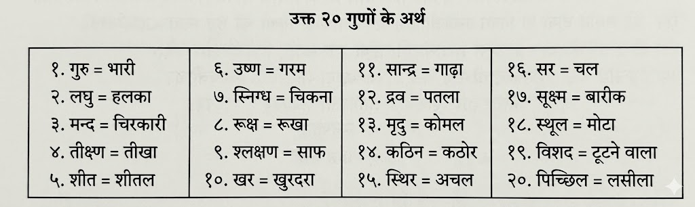

1.1 आयुष्कामीय अध्याय
आयु की इच्छा / स्वस्थ जीवन का उद्देश्य
- श्लोक 1 - जो अद्वितीय वैद्य राग, द्वेष आदि मानसिक रोगों को, जो निरंतर
मनुष्य से जुड़े रहते हैं और पूरे शरीर में फैलकर चंचलता, मोह और अशांति उत्पन्न करते हैं, उन्हें जड़ से
नष्ट कर देता है — उस वैद्य को नमस्कार है।
- श्लोक 2 - जो व्यक्ति जीवन की इच्छा रखता है और धर्म, अर्थ तथा सुख को
प्राप्त करना चाहता है, उसे आयुर्वेद के उपदेशों का अत्यन्त आदरपूर्वक पालन करना चाहिए।
- श्लोक 3 - ब्रह्माजी ने आयुर्वेद का स्मरण करके उसे प्रजापति को सिखाया।
प्रजापति ने अश्विनीकुमारों को, अश्विनीकुमारों ने इन्द्र को, इन्द्र ने अत्रिपुत्र आदि मुनियों को, और उन
मुनियों ने अग्निवेश आदि शिष्यों को यह ज्ञान दिया। आगे चलकर अग्निवेश आदि ने अलग-अलग आयुर्वेद-तंत्रों की
रचना की।
- श्लोक 4 - उन बहुत बिखरे हुए प्राचीन आयुर्वेद तंत्रों से मुख्य सार भाग
लेकर यह अष्टाङ्गहृदय ग्रंथ बनाया जा रहा है। यह न अत्यधिक संक्षिप्त है और न अत्यधिक विस्तृत।
- श्लोक 5 - आयुर्वेद की आठ शाखाएँ कही गई हैं — कायचिकित्सा, बालचिकित्सा,
ग्रहचिकित्सा, ऊर्ध्वाङ्गचिकित्सा, शल्यचिकित्सा, दंष्ट्र (विष) चिकित्सा, जरा (रसायन) और वृष (वाजीकरण)
चिकित्सा — इन्हीं में सम्पूर्ण चिकित्सा का आधार है।
- श्लोक 6 - संक्षेप में शरीर के तीन दोष बताए गए हैं — वात, पित्त और कफ।
- श्लोक 6.1 - दोष जब विकृत होते हैं तो शरीर को नष्ट करते हैं,
और जब अविकृत होते हैं तो शरीर को धारण करते हैं।
- श्लोक 7 - ये तीनों दोष पूरे शरीर में फैले हुए होते हुए भी अपने-अपने
विशेष स्थानों में स्थित रहते हैं — नीचे, मध्य और ऊपर के भागों में।
- श्लोक 7.1 - दोष आयु, दिन-रात और भोजन के प्रारंभ, मध्य और अंत
में अलग-अलग प्रभाव दिखाते हैं।
- श्लोक 8 - वात, पित्त और कफ के प्रभाव से अग्नि (पाचन शक्ति) कभी विषम,
कभी तीक्ष्ण और कभी मंद हो जाती है; और जब ये दोष संतुलित होते हैं, तब अग्नि भी सम (संतुलित) रहती है।
- श्लोक 8.1 - कोष्ठ (पाचन तंत्र) तीन प्रकार का होता है —
क्रूर, मृदु और मध्यम।
- श्लोक 9 - जैसे विषकृमि अपने ही विष से उत्पन्न होकर उसी में रहते हैं,
वैसे ही दोष जन्म के प्रारम्भ से ही शुक्र और आर्तव में स्थित रहते हैं।
- श्लोक 10 - दोषों के आधार पर विभिन्न प्रकार की प्रकृतियाँ होती हैं —
हीन, मध्यम और उत्तम। इन सबमें संतुलित दोषों वाली (समधातु) प्रकृति श्रेष्ठ मानी जाती है, जबकि दो दोषों से
बनी प्रकृतियाँ कम उत्तम मानी गई हैं।
- श्लोक 10.1 - वात (अनिल) के गुण हैं — रूक्ष, लघु, शीत, खर,
सूक्ष्म और चल।
- श्लोक 11 - पित्त दोष थोड़ा स्निग्ध, तीक्ष्ण, गर्म, हल्का, विशिष्ट गंध
वाला, प्रवाही और द्रव (तरल) स्वभाव का होता है।
- श्लोक 11.1 - कफ के गुण हैं — स्निग्ध, शीत, गुरु, मन्द,
श्लक्ष्ण, मृदु और स्थिर।
- श्लोक 12 - दो दोषों के विकार से संसर्ग और तीनों दोषों के विकार से
सन्निपात होता है।
- श्लोक 13 - रस, रक्त, मांस, मेद, अस्थि, मज्जा और शुक्र — ये सात धातुएँ
हैं। मूत्र, मल और स्वेद आदि शरीर के मल (अपशिष्ट) हैं।
- श्लोक 13.1 - दोष समान गुणों से बढ़ते हैं और विपरीत गुणों से
घटते हैं।
- श्लोक 14 - रस (स्वाद) छह प्रकार के होते हैं — मधुर, अम्ल, लवण, तिक्त,
कटु और कषाय। ये द्रव्यों में स्थित होते हैं और क्रम के अनुसार बल प्रदान करते हैं।
- श्लोक 15 - छह रसों में से पहले तीन (मधुर, अम्ल, लवण) वात को शांत करते
हैं। तिक्त, कटु और कषाय रस कफ को कम करते हैं। और कषाय, तिक्त तथा मधुर रस पित्त को शांत करते हैं।
- श्लोक 16 - द्रव्य (आहार या औषधि) तीन प्रकार के होते हैं — दोषों को
शांत करने वाले, दोषों को बढ़ाने वाले और स्वस्थ व्यक्ति के लिए हितकारी।
- श्लोक 16.1 - द्रव्यों का वीर्य (प्रभाव) दो प्रकार का होता
है — उष्ण और शीत।
- श्लोक 17 - द्रव्य का पाचन होने के बाद उसका विपाक तीन प्रकार का होता
है — मधुर, अम्ल और कटु।
- श्लोक 18 - गुरु आदि 10 और उनके विपरीत 10 मिलाकर कुल 20 गुण होते हैं।
- श्लोक 19 - समय, इन्द्रिय और कर्म का कम, अधिक या गलत उपयोग रोग का कारण
है; सही उपयोग स्वास्थ्य का कारण है।
- श्लोक 19.1 - दोषों का असंतुलन रोग है और दोषों का संतुलन
स्वास्थ्य है।
- श्लोक 20 - रोग दो प्रकार के होते हैं — आंतरिक (निज) और बाहरी
(आगन्तु)।
- श्लोक 20.1 - दोषों के स्थान (अधिष्ठान) दो प्रकार के हैं —
शरीर और मन।
- श्लोक 21 - मन के दो दोष बताए गए हैं — रज और तम।
- श्लोक 21.1 - रोगी की जांच देखने, स्पर्श करने और प्रश्न
पूछने से करनी चाहिए।
- श्लोक 22 - रोग का ज्ञान उसके कारण, प्रारंभिक लक्षण, स्पष्ट लक्षण और
उपशय से किया जाता है।
- श्लोक 22.1 - देश (स्थान) दो प्रकार का माना गया है — भूमि और
शरीर के आधार पर।
- श्लोक 23 - भूमि (प्रदेश) तीन प्रकार की होती है — जाङ्गल (वातप्रधान),
अनूप (कफप्रधान) और साधारण (संतुलित)।
- श्लोक 24 - रोग की अवस्था और समय के अनुसार ही औषधि का उचित उपयोग किया
जाता है।
- श्लोक 24.1 - औषधि दो प्रकार की होती है — शोधन और शमन।
- श्लोक 25 - शरीर के दोषों के लिए क्रम से बस्ति, विरेचन, वमन आदि
श्रेष्ठ उपचार हैं, तथा तैल, घृत और मधु भी महत्वपूर्ण औषधियाँ हैं।
- श्लोक 26 - बुद्धि, धैर्य और आत्मज्ञान मन के दोषों के लिए श्रेष्ठ औषधि
हैं।
- श्लोक 27 - चिकित्सा के चार अंग हैं — वैद्य, औषधि, परिचारक और रोगी।
- श्लोक 27.1 - अच्छा वैद्य वह है जो कुशल, शास्त्रज्ञ, अनुभवी
और शुद्ध हो।
- श्लोक 28 - उत्तम औषधि वह है जो अनेक रूपों में उपयोगी, गुणयुक्त और
पूर्ण हो।
- श्लोक 28.1 - परिचारक को समर्पित, स्वच्छ, कुशल और बुद्धिमान
होना चाहिए।
- श्लोक 29 - रोगी को कुशल, स्वच्छ, वैद्य के निर्देश मानने वाला, अपनी
बात बताने वाला और धैर्यवान होना चाहिए।
- श्लोक 29.1 - रोग दो प्रकार के होते हैं — साध्य और असाध्य।
साध्य में सुसाध्य और कृच्छ्रसाध्य, तथा असाध्य में याप्य और अनुपक्रम होते हैं।
- श्लोक 30 - जो रोगी युवा, संयमी, औषधि सहन करने वाला हो और जिसका रोग
प्रारंभिक व बिना जटिलता वाला हो — वह जल्दी ठीक होता है।
- श्लोक 31 - यदि शरीर, स्थान, ऋतु और प्रकृति अनुकूल हों और रोग नया तथा
एक दोष का हो, तो वह आसानी से ठीक हो जाता है।
- श्लोक 31.1 - जो रोग शस्त्र आदि से ही ठीक होते हैं वे कठिन
होते हैं, और कुछ रोग सरलता से भी ठीक हो जाते हैं।
- श्लोक 32 - जब आयु शेष रहती है, तो कुछ रोग पथ्य पालन से नियंत्रित
(याप्य) रहते हैं; और पथ्य के विपरीत आचरण करने पर वे बढ़ जाते हैं।
- श्लोक 33 - जो रोग अत्यंत विकृत अवस्था में हो, जिसमें अरिष्ट लक्षण
दिखाई दें और जो इन्द्रियों का नाश करने वाला हो — वह अनुपक्रम (असाध्य) होता है।
- श्लोक 34 - वैद्य को ऐसे रोगी का उपचार नहीं करना चाहिए जो साधनों से
रहित, अस्थिर, आदेश न मानने वाला, आयु समाप्त, क्रोधी, शोकग्रस्त, डरपोक, कृतघ्न या स्वयं को ज्ञानी समझने
वाला हो।
- श्लोक 35 - अब आगे इस ग्रंथ के अध्यायों का संक्षेप (सूची) बताया जाएगा।
- श्लोक 36 - आयु की इच्छा रखने वाले के लिए दिनचर्या, रोगों की रोकथाम,
अन्न का ज्ञान, अन्न की रक्षा, उचित मात्रा और द्रव्य-रस का ज्ञान आवश्यक है।
- श्लोक 37 - दोषों का ज्ञान, उनके भेद, उनकी चिकित्सा तथा शोधन, स्नेहन,
स्वेदन, विरेचन, बस्ति और नस्य आदि उपचार बताए गए हैं।
- श्लोक 38 - धूमपान, गण्डूष, नेत्र चिकित्सा, यंत्र-शस्त्र, सिरावेध,
शल्यक्रिया तथा क्षार और अग्निकर्म आदि उपचार बताए गए हैं।
- श्लोक 39 - इस प्रकार सूत्रस्थान के 30 अध्याय हैं। आगे शारीरस्थान में
गर्भ, अंग और मर्म का वर्णन होगा।
- श्लोक 40 - निदानस्थान में विभिन्न रोगों जैसे ज्वर, श्वास, यक्ष्मा,
मद, अर्श और अतिसार आदि का कारण और वर्णन किया गया है।
- श्लोक 41 - मूत्राघात, प्रमेह, विद्रधि, उदर, पाण्डु, कुष्ठ, वात रोग और
वातरक्त आदि रोगों पर कुल 16 अध्याय बताए गए हैं।
- श्लोक 42 - ज्वर, रक्त विकार, कास, श्वास, यक्ष्मा, वमन, मदात्यय, अर्श,
विष और मूत्र विकारों पर चिकित्सा का वर्णन किया गया है।
- श्लोक 43 - विद्रधि, गुल्म, उदर, पाण्डु, शोफ, विसर्प, कुष्ठ, वात रोग
और वातरक्त आदि की चिकित्सा बताई गई है।
- श्लोक 44 - आगे 22 अध्याय कल्प और सिद्धि स्थान के हैं, जिनमें वमन,
विरेचन और बस्ति की विधियाँ बताई गई हैं।
- श्लोक 45 - सिद्धि स्थान में बस्ति की आपत्तियाँ, द्रव्यकल्प, बालोपचार,
बाल रोग और ग्रह रोगों का वर्णन किया गया है।
- श्लोक 46 - उन्माद, स्मृति-भ्रंश, पलक, जोड़ों, नेत्र, कर्ण आदि तथा
सर्वांग रोगों के अध्यायों का वर्णन किया गया है।
- श्लोक 47 - कान, नाक, मुख, सिर के रोग, भगन्दर, ग्रन्थि और छोटे-छोटे
रोगों का वर्णन किया गया है।
- श्लोक 48 - विष, कीट, मूषक आदि के रोगों तथा रसायन चिकित्सा और
संतानहीनता के लिए बीजपोषण अध्याय का वर्णन किया गया है।
📜 श्लोक 1
रागादिरोगान् सततानुषक्तानशेषकायप्रसृतानशेषान् ।
औत्सुक्यमोहारतिदाञ्जघान योऽपूर्ववैद्याय नमोऽस्तु तस्मै ॥ १ ॥
यह श्लोक अष्टाङ्गहृदयम् के सूत्रस्थान के पहले अध्याय, आयुष्कामीय अध्याय , का मंगलाचरण है। आचार्य वाग्भट द्वारा रचित यह श्लोक एक "अपूर्व वैद्य" को नमन करता है जिसने मानसिक और शारीरिक विकारों को जड़ से मिटा दिया है।
दिए गए स्रोतों के आधार पर इस श्लोक का हिंदी अर्थ और व्याख्या नीचे दी गई है:
श्लोक का हिंदी अर्थ
"जो राग (आसक्ति) आदि रोग सदा मानव मात्र के पीछे लगे रहते हैं, जो सम्पूर्ण शरीर में फैले रहते हैं और जो उत्सुकता, मोह तथा अरति (बेचैनी) को उत्पन्न करते रहते हैं, उन सबको जिसने नष्ट किया उस अपूर्व वैद्य को हमारा (ग्रन्थकार का) नमस्कार हो"।
प्रमुख पदों की विस्तृत व्याख्या
- रागादिरोगान् (राग आदि रोग): राग, द्वेष, क्रोध, लोभ, मोह, मत्सर और ईर्ष्या आदि को मानसिक रोग कहा गया है। स्रोत स्पष्ट करता है कि चूंकि मन का आधार देह (शरीर) है, इसलिए ये मानसिक रोग शरीर को भी पीड़ित करते हैं। इसकी तुलना एक तपे हुए लोहे के गोले से की गई है—जैसे गर्म गोला उस पात्र को भी तपा देता है जिसमें वह रखा जाता है, वैसे ही ये विकार शरीर को कष्ट देते हैं।
- अशेषकायप्रसृतान्: इसका अर्थ है कि ये रोग शरीर के किसी एक हिस्से में नहीं, बल्कि सम्पूर्ण शरीर में व्याप्त रहते हैं।
- रोगों के लक्षण:
- औत्सुक्य (उत्सुकता): इन्द्रियों के विषयों को प्राप्त करने की तीव्र इच्छा या प्रबल अभिलाषा।
- मोह: अज्ञानता, या यह समझ न पाना कि क्या कार्य करना चाहिए और क्या नहीं।
- अरति: मानसिक बेचैनी, जिसके कारण व्यक्ति न एक जगह खड़ा रह पाता है और न बैठ पाता है।
- अपूर्ववैद्याय (अपूर्व वैद्य): टीकाकार अरुणदत्त के अनुसार, इसका अर्थ "सर्वप्रथम या सर्वश्रेष्ठ वैद्य" है। यह उस परम पुरुष (जैसे बुद्ध या धन्वंतरि) के लिए प्रयुक्त है जिसने सबसे पहले स्वयं के विकारों को जीता और फिर संसार को निरोग होने का मार्ग दिखाया।
दार्शनिक और व्यावहारिक संदर्भ
- गीता का संदर्भ: स्रोत में श्रीकृष्ण के गीता संदेश (२/६२-६३) का उल्लेख है, जो बताता है कि विषयों का चिंतन करने से आसक्ति (राग) पैदा होती है, जिससे काम, क्रोध और अंततः मोह उत्पन्न होता है, जो बुद्धि का नाश कर देता है।
- आयुर्वेद का उद्देश्य: आचार्य वाग्भट ने इस ग्रन्थ की रचना इसलिए की ताकि मनुष्य दीर्घायु प्राप्त कर जीवन के मुख्य उद्देश्यों— धर्म, अर्थ और सुख —की सिद्धि कर सके।
- बौद्ध प्रभाव: स्रोत यह भी बताता है कि वाग्भट का यह मंगलाचरण 'धम्मपद' के उपदेशों के समान है, जहाँ राग और मोह का त्याग करने वाला व्यक्ति सांसारिक बंधनों और रोगों से मुक्त हो जाता है।
अथात आयुष्यकामीयमध्य्यायं व्याख्यास्यामः ।
🔹 सरल अर्थ
अब इसके बाद हम आयुष्यकामीय (desiring longevity) अध्याय की व्याख्या करेंगे।
🔹 पदच्छेद और शब्दार्थ
अथ - इसके बाद (Now / hereafter), अतः - इस कारण से (Hence / therefore).
इति ह स्माहुरात्रेयादयो महर्षयः ।
यह वाक्यांश अष्टाङ्गहृदयम् के प्रत्येक अध्याय के आरंभ में मिलता है और ग्रन्थ की विश्वसनीयता स्थापित करने के लिए अत्यंत महत्वपूर्ण है।
दिए गए स्रोतों के आधार पर इसका अर्थ और महत्व नीचे दिया गया है:
हिंदी अर्थ
"इस विषय में आत्रेय आदि महर्षियों ने इस प्रकार कहा था"।
प्रमुख व्याख्या और महत्व
- ग्रन्थ की प्रामाणिकता (Authenticity): आचार्य वाग्भट ने अपने ग्रन्थ की प्रामाणिकता सिद्ध करने के उद्देश्य से प्रत्येक अध्याय के आरम्भ में इसे लिखा है। इसका तात्पर्य यह है कि इस तन्त्र में जो कुछ भी कहा गया है, वह महर्षि आत्रेय तथा धन्वन्तरि आदि ऋषियों के वचनों के अनुसार ही है।
- आप्त पुरुष का संदर्भ: आत्रेय आदि ऋषि 'आप्त पुरुष' थे, जिनका कथन पूर्णतः विश्वसनीय और प्रमाणिक माना जाता है। उनके वचनों का अनुसरण करने के कारण वाग्भट का यह ग्रन्थ भी प्रमाणिक (आप्त) बन जाता है।
- शास्त्रानुकूल ज्ञान: वाग्भट के अनुसार, इस ग्रन्थ में शब्द या वाक्य तो दूर, एक मात्रा भी शास्त्रों (आगम) के विपरीत नहीं है। यह वाक्यांश इस बात की पुष्टि करता है कि दी गई जानकारी प्राचीन आयुर्वेदिक परंपरा के अनुरूप है।
- परंपरा का सम्मान: आयुर्वेद के अवतरण क्रम में देवराज इंद्र ने पुनर्वसु आत्रेय आदि महर्षियों को उपदेश दिए थे, जिन्होंने आगे अग्निवेश आदि शिष्यों को पढ़ाया। अतः "आत्रेयादयो महर्षयः" कहकर वाग्भट ज्ञान के उसी मूल स्रोत के प्रति सम्मान व्यक्त करते हैं।
निष्कर्षतः, यह वाक्यांश पाठक को यह विश्वास दिलाता है कि ग्रन्थ में वर्णित चिकित्सा विधियाँ और उपदेश त्रिकालसत्य हैं और ऋषियों की महान परंपरा से आए हैं।
📜 श्लोक 2
आयु: कामयमानेन धर्मार्थसुखसाधनम् ।
आयुर्वेदोपदेशेषु विधेय: परमादर: ॥ २ ॥
यह श्लोक अष्टाङ्गहृदयम् के सूत्रस्थान के पहले अध्याय (आयुष्कामीय अध्याय) का दूसरा श्लोक है, जिसमें आचार्य वाग्भट आयुर्वेद के अध्ययन के मुख्य प्रयोजन और उसके उपदेशों के महत्व को बताते हैं।
श्लोक का अर्थ
धर्म, अर्थ और सुख (काम)—इन तीन पुरुषार्थों की प्राप्ति का साधन (माध्यम) आयु है। अतः जो मनुष्य एक लंबी और सुखद आयु की कामना करता है, उसे आयुर्वेद के शास्त्रों में बताए गए उपदेशों का परम आदर (विशेष श्रद्धा के साथ पालन) करना चाहिए।
प्रमुख व्याख्या और विस्तृत विवरण
- आयु: साधनम् (आयु एक माध्यम है): स्रोतों के अनुसार, मनुष्य जीवन के तीन प्रमुख लक्ष्यों—धर्म, अर्थ और सुख—को प्राप्त करने का एकमात्र साधन लंबी और स्वस्थ आयु है। बिना स्वस्थ जीवन के इन तीनों पुरुषार्थों की सिद्धि असंभव है।
- पुरुषार्थ त्रय (जीवन के तीन लक्ष्य):
- धर्म: जिससे लोक का धारण और पोषण होता है।
- अर्थ: धन-सम्पत्ति तथा जीवन के लिए उपयोगी वे समस्त साधन जिन्हें समाज प्राप्त करना चाहता है।
- सुख: यह दो प्रकार का होता है—एक वह जिससे तत्काल सुख की अनुभूति होती है और दूसरा 'आत्यन्तिक' जिसे मोक्ष कहा जाता है।
- आयुर्वेदोपदेशेषु विधेयः परमादरः (उपदेशों का सम्मान): क्योंकि आयु ही जीवन के लक्ष्यों का आधार है, इसलिए आयुर्वेद के उपदेशों के प्रति समाज में आदर भाव होना चाहिए। इन 'आप्त' (विश्वसनीय महर्षियों) के वचनों की उपेक्षा करने से 'सुखायु' की प्राप्ति नहीं हो पाती।
- उपदेशों के प्रकार: आयुर्वेद में दो प्रकार के उपदेश मिलते हैं—विधानात्मक (जिन्हें करना चाहिए) और निषेधात्मक (जिन्हें नहीं करना चाहिए)। इन त्रिकालसत्य उपदेशों का पालन अनिवार्य है।
निष्कर्ष
आचार्य वाग्भट स्पष्ट करते हैं कि यदि कोई व्यक्ति हितायु, सुखायु और दीर्घायु चाहता है, तो उसे आयुर्वेद में वर्णित जीवन पद्धति (जैसे आहार-विहार के नियम) को पूरी निष्ठा के साथ अपनाना होगा।
📜 श्लोक 3
ब्रह्मा स्मृत्वाऽऽयुषो वेदं प्रजापतिमजिग्रहत् ।
सोऽश्विनौ तौ सहस्राक्षं सोऽत्रिपुत्रादिकान्मुनीन् ॥ ३ ॥
यह श्लोक आयुर्वेदावतरण (Ayurveda's Descent) की व्याख्या करता है, यानी यह बताता है कि आयुर्वेद का दिव्य ज्ञान ब्रह्मा जी से ऋषियों तक कैसे पहुँचा।
इसका सरल हिंदी अर्थ: "ब्रह्मा जी ने सबसे पहले आयुर्वेद का स्मरण (याद) किया और उसे दक्षप्रजापति को सिखाया। दक्षप्रजापति ने इसे अश्विनीकुमारों को सिखाया, जिन्होंने आगे इसे इंद्र (सहस्राक्ष) को प्रदान किया। फिर इंद्र ने इस ज्ञान को पुनर्वसु आत्रेय आदि महर्षियों को दिया।"
इस श्लोक की मुख्य बातें:
- ब्रह्मा स्मृत्वा (Brahma Remembers): स्रोतों के अनुसार, ब्रह्मा ने आयुर्वेद की रचना नहीं की, बल्कि इसका स्मरण किया, क्योंकि यह ज्ञान शाश्वत और अनादि है।
- ज्ञान की वंशावली: यह ज्ञान की एक अटूट श्रृंखला को दर्शाता है—ब्रह्मा ➔ दक्षप्रजापति ➔ अश्विनीकुमार ➔ इंद्र ➔ आत्रेय आदि ऋषि।
- अथर्ववेद का उपवेद: आयुर्वेद को अथर्ववेद का उपवेद माना गया है, जो आयु की रक्षा के लिए बनाया गया है।
📜 श्लोक 4
तेऽग्निवेशादिकांस्ते तु पृथक् तन्त्राणि तेनिरे ।
तेभ्योऽतिविप्रकीर्णेभ्यः प्रायः सारतरोच्चयः ॥ ४ ॥
यह श्लोक अष्टाङ्गहृदयम् के स्वरूप और इसकी रचना के पीछे के उद्देश्य को स्पष्ट करता है।
इसका सरल हिंदी अर्थ: "अग्निवेश आदि ऋषियों ने (इन्द्र और आत्रेय से प्राप्त ज्ञान के आधार पर) अलग-अलग तन्त्रों (आयुर्वेद ग्रन्थों) की रचना की। उन अत्यन्त विस्तृत और इधर-उधर बिखरे हुए प्राचीन तन्त्रों में से श्रेष्ठतम सार (Essence) को लेकर इस 'अष्टाङ्गहृदय' ग्रन्थ का संग्रह किया गया है।"
मुख्य बिंदु:
- ऋषियों का योगदान: पुनर्वसु आत्रेय के शिष्य अग्निवेश, भेड, जतूकर्ण आदि मुनियों ने अपनी बुद्धि के अनुसार अलग-अलग विशिष्ट ग्रन्थ लिखे। उदाहरण के लिए, अग्निवेश द्वारा रचित कायचिकित्सा का प्रधान ग्रन्थ 'चरकसंहिता' है।
- ग्रन्थ की विशेषता (सारतरोच्चय): आचार्य वाग्भट बताते हैं कि पुराने ग्रन्थ बहुत बड़े थे या ज्ञान उनमें बहुत बिखरा हुआ था। उन्होंने उन सबमें से "उत्तम-से-उत्तम" भाग को निकालकर इसे हृदय (Essential Heart) की तरह प्रस्तुत किया है।
- न अतिसंक्षेप न अतिविस्तार: यह ग्रन्थ न तो बहुत छोटा है और न ही बहुत बड़ा, बल्कि इसमें चिकित्सा के रहस्यों को संतुलित तरीके से पिरोया गया है।
📜 श्लोक 5
क्रियतेऽष्टाङ्गहृदयं नातिसङ्क्षेपविस्तरम् ।
कायबालग्रहोर्ध्वाङ्गशल्यदंष्ट्राजरावृषान् ॥ ५ ॥
ये पंक्तियाँ अष्टाङ्गहृदयम् की रचना शैली और आयुर्वेद के आठ अंगों (Astanga) का परिचय देती हैं:
१. ग्रन्थ की विशेषता (श्लोक ४ का अंश)
"क्रियतेऽष्टाङ्गहृदयं नातिसङ्क्षेपविस्तरम्"
- अर्थ: आचार्य वाग्भट कहते हैं कि उन्होंने इस ग्रन्थ की रचना न तो बहुत संक्षेप में और न ही बहुत विस्तार में की है।
- महत्व: पुराने ग्रन्थ बहुत बड़े थे या ज्ञान उनमें बहुत बिखरा हुआ था। वाग्भट ने उन सबमें से श्रेष्ठतम सार (Essence) निकालकर उसे संतुलित रूप में प्रस्तुत किया है।
२. आयुर्वेद के आठ अंग (श्लोक ५)
"कायबालग्रहोर्ध्वाङ्गशल्यदंष्ट्राजरावृषान् ॥ ५ ॥" इसमें आयुर्वेद की आठ शाखाओं का वर्णन है, जिनमें सम्पूर्ण चिकित्सा समाहित है:
- कायचिकित्सा: सम्पूर्ण शरीर को प्रभावित करने वाले रोगों (जैसे ज्वर) की चिकित्सा।
- बालतन्त्र (कौमारभृत्य): बच्चों के रोगों और उनके पालन-पोषण का विज्ञान।
- ग्रहचिकित्सा (भूतविद्या): मानसिक विकारों और अदृश्य कारणों से होने वाले रोगों का उपचार।
- ऊर्ध्वाङ्गचिकित्सा (शालाक्य): गले से ऊपर के अंगों (आँख, कान, नाक, सिर) की चिकित्सा।
- शल्यचिकित्सा: सर्जरी या शस्त्र क्रिया, जिसे आठों अंगों में प्रधान माना गया है।
- दंष्ट्रा (अगदतन्त्र): विषैले जीवों (साँप, कीट आदि) के विष की चिकित्सा।
- जरा (रसायन): बुढ़ापे को रोकने, आयु और शक्ति बढ़ाने का विज्ञान।
- वृष (वाजीकरण): संतानोत्पत्ति और पौरुष शक्ति को बढ़ाने का विज्ञान।
📜 श्लोक 6
अष्टावङ्गानि तस्याहुश्चिकित्सा येषु संश्रिता ।
वायु: पित्तं कफश्चेति त्रयो दोषा: समासतः ॥ ६ ॥
ये पंक्तियाँ आयुर्वेद के संगठन और इसके सबसे महत्वपूर्ण सिद्धांत, त्रिदोष (Tridosha), का परिचय देती हैं:
१. चिकित्सा का आधार
"अष्टावङ्गानि तस्याहुश्चिकित्सा येषु संश्रिता"
- अर्थ: आयुर्वेद की पूरी चिकित्सा पद्धति इन्हीं आठ अंगों (शाखाओं) पर टिकी हुई है।
- महत्व: यह स्पष्ट करता है कि पिछले श्लोक में बताए गए आठ अंग (कायचिकित्सा, शल्य, आदि) चिकित्सा के संपूर्ण क्षेत्र को कवर करते हैं।
२. त्रिदोष का परिचय (श्लोक ६)
"वायु: पित्तं कफश्चेति त्रयो दोषा: समासतः"
- तीन दोष: आयुर्वेद शास्त्र के अनुसार संक्षेप में शरीर के तीन ही मुख्य दोष हैं— वात (वायु), पित्त और कफ।
- दोष क्यों कहलाते हैं?: जब ये शरीर को रुग्ण या दूषित करते हैं, तब इन्हें 'दोष' कहा जाता है; लेकिन जब ये संतुलित रहकर शरीर को धारण करते हैं, तब इन्हें 'धातु' और जब मलिन करते हैं, तब 'मल' कहा जाता है।
- तत्वों से संबंध: पञ्चमहाभूतों में 'वायु' तत्व वात है, 'अग्नि' तत्व पित्त है और 'जल' तत्व कफ के रूप में शरीर में रहता है। आचार्य वाग्भट ने यहाँ सुश्रुत के उस मत का खंडन किया है जिसमें 'रक्त' को चौथा दोष माना गया है; उनके अनुसार दोष केवल तीन ही हैं।
📜 श्लोक 7
विकृताऽविकृता देहं घ्नन्ति ते वर्तयन्ति च ।
ते व्यापिनोऽपि हृन्नाभ्योरधोमध्योर्ध्वसंश्रया: ॥ ७ ॥
यह श्लोक दोषों के प्रभाव और शरीर में उनके मुख्य स्थानों का वर्णन करता है:
- दोषों का प्रभाव: वात, पित्त और कफ जब विकृत (असंतुलित—बढ़े हुए या क्षीण) होते हैं, तो वे शरीर का विनाश करते हैं। इसके विपरीत, जब वे अविकृत (संतुलित या समभाव में) रहते हैं, तो वे शरीर को धारण करते हैं और स्वास्थ्य बनाए रखते हैं।
- दोषों के स्थान: यद्यपि ये तीनों दोष पूरे शरीर में व्याप्त रहते हैं, फिर भी शरीर में इनके मुख्य आश्रय स्थान इस प्रकार बताए गए हैं:
- वात (वायु): नाभि से निचले भाग में।
- पित्त: नाभि और हृदय के मध्य भाग में।
- कफ: हृदय से ऊपरी भाग में।
📜 श्लोक 8
वयोऽहोरात्रिभुक्तानां तेऽन्तमध्यादिगा: क्रमात् ।
तैर्भवेद्विषमस्तीक्ष्णो मन्दश्चाग्निः समैः समः ॥ ८ ॥
ये श्लोक बताते हैं कि उम्र, समय और पाचन के अनुसार दोष कब प्रभावी होते हैं और वे हमारी पाचन शक्ति (अग्नि) को कैसे प्रभावित करते हैं:
१. दोषों के सक्रिय होने का समय
दोषों का प्रभाव उम्र, दिन-रात और भोजन के पचने के समय के अनुसार "अंत, मध्य और आदि" (शुरुआत) के क्रम में होता है:
- वात (अंत): वृद्धावस्था, दिन और रात का अंतिम प्रहर (दोपहर २-६ और रात २-६ बजे), और भोजन पचने का अंतिम समय ।
- पित्त (मध्य): युवावस्था, दोपहर और मध्यरात्रि (१० से २ बजे), और भोजन पचने का मध्य समय ।
- कफ (आदि/शुरुआत): बाल्यावस्था, दिन और रात का शुरुआती भाग (सुबह ६-१० और शाम ६-१० बजे), और भोजन करने का शुरुआती समय ।
२. जठराग्नि पर दोषों का प्रभाव
इन दोषों की स्थिति के अनुसार शरीर की अग्नि (Agni) चार प्रकार की हो जाती है:
- विषम अग्नि: वात दोष के कारण अग्नि कभी तेज तो कभी धीमी हो जाती है ।
- तीक्ष्ण अग्नि: पित्त दोष के कारण अग्नि बहुत तेज हो जाती है और भोजन को बहुत जल्दी पचा देती है ।
- मन्द अग्नि: कफ दोष के कारण पाचन शक्ति बहुत धीमी हो जाती है ।
- सम अग्नि: जब तीनों दोष संतुलित (सम) होते हैं, तो अग्नि भी संतुलित रहती है, जो उत्तम स्वास्थ्य का लक्षण है ।
📜 श्लोक 9
कोष्ठ: क्रूरो मृदुर्मध्यो मध्य: स्यात्तै: समैरपि ।
शुक्रार्तवस्थैर्जन्मादौ विषेणेव विषक्रिमे: ॥ ९ ॥
इन श्लोकों में आचार्य वाग्भट कोष्ठ के प्रकार और मनुष्य की प्रकृति के निर्धारण की व्याख्या कर रहे हैं:
१. कोष्ठ के प्रकार (Types of Kostha)
दोषों की स्थिति के अनुसार कोष्ठ (पाचन तंत्र की प्रवृत्ति) तीन प्रकार का होता है :
- क्रूर कोष्ठ (Hard): वात दोष की प्रधानता के कारण मल कठिनता से निकलता है।
- मृदु कोष्ठ (Soft): पित्त दोष की अधिकता के कारण कोष्ठ कोमल होता है और दूध पीने मात्र से भी विरेचन (पेट साफ) हो जाता है ।
- मध्यम कोष्ठ (Medium): कफ दोष की प्रधानता या तीनों दोषों के संतुलित (सम) होने पर कोष्ठ मध्यम रहता है ।
२. प्रकृति का निर्धारण (Formation of Prakriti)
मनुष्य की शारीरिक प्रकृति का निर्धारण गर्भाधान (conception) के समय ही हो जाता है :
- विषक्रिमि उपमा: जैसे विषैले कीड़े (बिच्छू आदि) विष में पैदा होने के कारण स्वयं विष से नहीं मरते, वैसे ही शुक्र और आर्तव (Sperm and Ovum) में स्थित दोष गर्भ की प्रकृति का निर्माण करते हैं और शरीर को हानि नहीं पहुँचाते ।
- तीन मुख्य प्रकृतियाँ:
- वात प्रकृति: इसे 'हीन' (निम्न) माना गया है ।
- पित्त प्रकृति: इसे 'मध्यम' माना गया है ।
- कफ प्रकृति: इसे 'उत्तम' (श्रेष्ठ) माना गया है ।
- समधातु प्रकृति: जिसमें तीनों दोष संतुलित हों, वह सबसे श्रेष्ठ होती है, जबकि दो दोषों वाली (द्विदोषज) प्रकृतियाँ निन्दनीय मानी गई हैं ।
📜 श्लोक 10
तैश्च तिस्र: प्रकृतयो हीनमध्योत्तमा: पृथक् ।
समधातु: समस्तासु श्रेष्ठा, निन्द्या द्विदोषजा: ॥ १० ॥
यह श्लोक मनुष्य की शारीरिक प्रकृति (Prakriti) के प्रकारों और उनकी गुणवत्ता का वर्णन करता है। गर्भाधान के समय शुक्र और आर्तव में जिस दोष की प्रधानता होती है, उसी के अनुसार व्यक्ति की प्रकृति निश्चित होती है।
स्रोतों के आधार पर इसका विस्तृत अर्थ इस प्रकार है:
- तीन मुख्य प्रकृतियाँ: दोषों की अधिकता के अनुसार तीन प्रकार की प्रकृतियाँ बनती हैं:
- वात प्रकृति: इसे 'हीन' (निम्न) श्रेणी का माना गया है।
- पित्त प्रकृति: इसे 'मध्यम' श्रेणी का माना गया है।
- कफ प्रकृति: इसे 'उत्तम' (श्रेष्ठ) श्रेणी का माना गया है।
- समधातु प्रकृति: जिस प्रकृति में तीनों दोष (वात, पित्त, कफ) समान अवस्था में संतुलित रहते हैं, वह सबमें श्रेष्ठ मानी गई है।
- द्विदोषज प्रकृति: दो-दो दोषों के मिश्रण से बनने वाली प्रकृतियाँ (जैसे वात-पित्त, पित्त-कफ आदि) निंदनीय या दोषपूर्ण मानी जाती हैं।
विशेष तथ्य: जैसे विषैले कीड़े विष में पैदा होने पर भी उससे मरते नहीं, वैसे ही ये दोष जन्म के समय प्रकृति निर्माण करते हुए शरीर को हानि नहीं पहुँचाते।
📜 श्लोक 11
तत्र रूक्षो लघु: शीत: खर: सूक्ष्मश्चलोऽनिल: ।
पित्तं सस्नेहतीक्ष्णोष्णं लघु विस्रं सरं द्रवम् ॥ ११ ॥
यह श्लोक वात और पित्त दोषों के स्वाभाविक गुणों का वर्णन करता है:
- वात के गुण (अनिल): वायु रूक्ष (रूखी), लघु (हलकी), शीत (ठंडी), खर (खुरदरी), सूक्ष्म और चल (निरंतर गतिशील) होती है । इसे 'योगवाही' भी कहा जाता है क्योंकि यह संपर्क में आने वाले गुणों के अनुसार व्यवहार बदल लेती है ।
- पित्त के गुण: पित्त सस्नेह (थोड़ा चिकना), तीक्ष्ण, उष्ण (गरम), लघु, विस्र (कच्चे मांस जैसी विशेष गंध वाला), सर (फैलने वाला) और द्रव (तरल) होता है ।
📜 श्लोक 12
स्निग्धः शीतो गुरुर्मन्दः श्लक्ष्णो मृत्स्नः स्थिरः कफः ।
संसर्ग: सन्निपातश्च तद्विद्वित्रिक्षयकोपतः ॥ १२ ॥
यह श्लोक कफ दोष के गुणों और दोषों के आपसी जुड़ाव (संसर्ग और सन्निपात) की व्याख्या करता है:
१. कफ दोष के गुण
श्लोक के पहले भाग में कफ के स्वाभाविक गुणों का वर्णन है :
- स्निग्ध: चिकना।
- शीत: ठंडा।
- गुरु: भारी।
- मन्द: धीमी गति वाला।
- श्लक्ष्ण: कोमल या साफ।
- मृत्स्न: मिट्टी की तरह चिकना या चिपचिपा (पिच्छिला) ।
- स्थिर: अपनी जगह पर टिके रहने वाला।
२. संसर्ग और सन्निपात (श्लोक १२)
यहाँ दोषों के असंतुलित होने की दो स्थितियों को समझाया गया है :
- संसर्ग (association/connection): जब किन्हीं दो दोषों (जैसे वात-पित्त या पित्त-कफ) की एक साथ वृद्धि या क्षय होता है, तो उसे 'संसर्ग' कहते हैं ।
- सन्निपात: जब तीनों दोषों (वात, पित्त और कफ) की एक साथ वृद्धि या क्षय होता है, तो उसे 'सन्निपात' कहा जाता है ।
विशेष: चिकित्सा के दौरान डॉक्टर इन्हीं गुणों को देखकर यह तय करता है कि कौन सा दोष बढ़ा हुआ है और उसे कैसे संतुलित करना है।
📜 श्लोक 13
रसासृङ्मांसमेदोऽस्थिमज्जशुक्राणि धातवः ।
सप्त दूष्याः——मला मूत्रशकृत्स्वेदादयोऽपि च ॥ १३ ॥
यह श्लोक शरीर के मुख्य घटकों—धातु (Dhatus) और मल (Malas) का परिचय देता है। आयुर्वेद के अनुसार, दोष, धातु और मल ही शरीर के मूल आधार हैं ।
श्लोक का अर्थ
"रस, रक्त, मांस, मेद, अस्थि, मज्जा और शुक्र—ये सात धातु हैं। चूँकि ये दोषों (वात, पित्त, कफ) द्वारा दूषित किए जाते हैं, इसलिए इन्हें 'दूष्य (contaminated)' भी कहा जाता है। मूत्र, पुरीष (मल) और स्वेद (पसीना) आदि शरीर के मल कहलाते हैं"।
प्रमुख बिंदुओं की व्याख्या
-
सात धातुएँ (Seven Dhatus): ये शरीर का धारण और पोषण करती हैं ।
१. रस: आहार का सार भाग (Plasma)।
२. रक्त: जीवन शक्ति (Blood)।
३. मांस: अंगों का लेपन (Muscle)।
४. मेद: स्नेहन या चिकनाहट (Fat)।
५. अस्थि: शरीर का ढांचा (Bone)।
६. मज्जा: हड्डियों के भीतर का पदार्थ (Marrow)।
७. शुक्र: प्रजनन तत्व (Reproductive fluid) ।
-
दूष्य (contaminated): धातुएँ स्वयं दूषित नहीं होतीं, बल्कि वात-पित्त-कफ दोष उन्हें दूषित करते हैं। जो दूषित होते हैं, उन्हें 'दूष्य' कहा जाता है ।
-
मल (Malas): जो शरीर को मलिन करते हैं, वे मल हैं। मुख्य रूप से ये तीन हैं—मूत्र (urine), पुरीष (stool) और स्वेद (sweat) ।
📜 श्लोक 14
वृद्धि: समानै: सर्वेषां विपरीतैर्विपर्यय: ।
रसा: स्वाद्वम्ललवणतिक्तोषणकषायका: ॥ १४ ॥
इन श्लोकों में आयुर्वेद के दो अत्यंत महत्वपूर्ण सिद्धांतों का वर्णन है: वृद्दि-क्षय का सामान्य नियम और छह रसों का परिचय।
१. वृद्धि और क्षय का सिद्धांत (Samanya-Vishesha)
"वृद्धि: समानै: सर्वेषां विपरीतैर्विपर्यय: ।"
- अर्थ: शरीर के सभी घटकों (दोष, धातु और मल) में समान गुणों वाले पदार्थों के सेवन से वृद्धि होती है, और विपरीत (उल्टे) गुणों वाले पदार्थों से उनका क्षय (कमी) होता है।
- महत्व: यह चिकित्सा का मूल आधार है। उदाहरण के लिए, यदि शरीर में गर्मी (पित्त) बढ़ी है, तो ठंडी (विपरीत) चीजों से उसे कम किया जाता है ।
२. छह रसों का परिचय (The Six Tastes)
"रसा: स्वाद्वम्ललवणतिक्तोषणकषायका: ॥ १४ ॥"
- छह रस: आयुर्वेद में मुख्य रूप से छह रस माने गए हैं :
- स्वादु (मधुर/मीठा): जैसे चीनी या घी।
- अम्ल (खट्टा): जैसे नींबू या इमली।
- लवण (नमकीन): जैसे नमक।
- तिक्त (कड़वा): जैसे नीम या चिरायता।
- ऊषण (कटु/तीखा): जैसे काली मिर्च या सोंठ।
- कषाय (कसैला): जैसे हरड़ या बहेड़ा।
- बल का क्रम: ये रस क्रम के अनुसार शरीर को बल प्रदान करते हैं, यानी 'मधुर' रस सबसे अधिक बलवान है और 'कषाय' रस सबसे कम बल देने वाला होता है ।
📜 श्लोक 15
षड् द्रव्यमाश्रितास्ते च यथापूर्वं बलावहा: ।
तत्राद्या मारुतं घ्नन्ति त्रयस्तिक्तादय: कफम् ॥ १५ ॥
यह श्लोक आयुर्वेद के छह रसों (Tastes) के बल और उनके द्वारा दोषों (Vata, Pitta, Kapha) के शमन के नियम को समझाता है:
१. रसों का बल (यथापूर्वं बलावहा:)
यह सूत्र बताता है कि ये छहों रस (मधुर/sweet, अम्ल/sour, लवण/salty, तिक्त/bitter , कटु/pungent, कषाय/astringent) शरीर को बल प्रदान करने में एक विशेष क्रम का पालन करते हैं :
- सबसे अधिक बलशाली: मधुर (मीठा) रस शरीर के लिए सबसे अधिक पौष्टिक और बलवर्धक है ।
- क्रमशः घटता बल: मधुर के बाद अम्ल, फिर लवण, तिक्त, कटु और अंत में कषाय रस सबसे कम बल देने वाला माना गया है ।
२. रसों का दोषों पर प्रभाव
श्लोक का दूसरा भाग बताता है कि कौन से रस किस दोष को शांत करते हैं:
- वात का शमन (आद्या मारुतं घ्नन्ति): पहले तीन रस—मधुर, अम्ल और लवण—वात दोष (वायु) को नष्ट या शांत करते हैं ।
- कफ का शमन (त्रयस्तिक्तादय: कफम्): बाद के तीन रस—तिक्त, कटु और कषाय—कफ दोष को नष्ट करते हैं ।
- पित्त का शमन: हालांकि आपके द्वारा पूछे गए अंश में नहीं है, लेकिन पूर्ण श्लोक के अनुसार कषाय, तिक्त और मधुर रस पित्त दोष को शांत करते हैं ।
संक्षेप में: यह नियम चिकित्सा का आधार है क्योंकि विपरीत गुणों वाले रसों के सेवन से ही बढ़े हुए दोषों को साम्यावस्था में लाया जाता है ।
📜 श्लोक 16
शमनं कोपनं स्वस्थहितं द्रव्यमिति त्रिधा ॥ १६॥
🔹 पदच्छेद और शब्दार्थ
- शमनम् — शांत करने वाला
- कोपनम् — बढ़ाने वाला / उत्तेजित करने वाला
- स्वस्थ-हितम् — स्वस्थ व्यक्ति के लिए हितकारी
- द्रव्यम् — पदार्थ / आहार / औषधि
- इति — इस प्रकार
- त्रिधा — तीन प्रकार से
🔹 सरल अर्थ
द्रव्य (आहार या औषधि) तीन प्रकार के होते हैं — दोषों को शांत करने वाले,
दोषों को बढ़ाने वाले और स्वस्थ व्यक्ति के लिए हितकारी।
🔹 विस्तृत व्याख्या (पुस्तकानुसार)
👉 इस श्लोक में द्रव्यों का मूल वर्गीकरण बताया गया है।
👉 पुस्तकानुसार:
- शमन द्रव्य — जो दोषों को संतुलित करते हैं
- कोपन द्रव्य — जो दोषों को बढ़ाते हैं
- स्वस्थहित द्रव्य — जो स्वस्थ व्यक्ति के लिए उपयोगी हैं और संतुलन बनाए रखते हैं
👉 यह वर्गीकरण चिकित्सा और आहार चयन का आधार है।
👉 सही द्रव्य का चयन रोग और स्वास्थ्य दोनों स्थितियों में अत्यंत महत्वपूर्ण है।
🔹 मुख्य सिद्धांत
- द्रव्य तीन प्रकार के होते हैं — शमन, कोपन, स्वस्थहित।
- चिकित्सा में इनका सही उपयोग आवश्यक है।
🧠 Memorisation version
द्रव्य तीन प्रकार के — शमन, कोपन और स्वस्थहित।
📜 श्लोक 16.1
उष्णशीतगुणोत्कर्षात्तत्र वीर्यं द्विधा स्मृतम् ॥ १६.१॥
🔹 पदच्छेद और शब्दार्थ
- उष्ण-शीत-गुण-उत्कर्षात् — उष्ण और शीत गुण की प्रधानता से
- तत्र — वहाँ (द्रव्यों में)
- वीर्यम् — वीर्य (प्रभाव शक्ति)
- द्विधा — दो प्रकार
- स्मृतम् — माना गया है
🔹 सरल अर्थ
द्रव्यों का वीर्य (प्रभाव) दो प्रकार का होता है — उष्ण और शीत।
🔹 मुख्य सिद्धांत
- वीर्य दो प्रकार — उष्ण, शीत
🧠 Memorisation version
वीर्य — उष्ण या शीत।
📜 श्लोक 17
त्रिधा विपाको द्रव्यस्य स्वाद्वम्लकटुकात्मकः ॥ १७॥
🔹 पदच्छेद और शब्दार्थ
- त्रिधा — तीन प्रकार का
- विपाकः — पाचन के बाद का परिणाम
- द्रव्यस्य — द्रव्य का
- स्वादु-अम्ल-कटुक-ात्मकः — मधुर, अम्ल और कटु स्वरूप
🔹 सरल अर्थ
द्रव्य का पाचन होने के बाद उसका विपाक तीन प्रकार का होता है — मधुर, अम्ल और कटु।
🔹 विस्तृत व्याख्या (पुस्तकानुसार)
👉 विपाक वह अंतिम प्रभाव है जो भोजन पचने के बाद शरीर पर पड़ता है।
👉 यह दोषों और धातुओं पर दीर्घकालिक प्रभाव डालता है।
🔹 मुख्य सिद्धांत
- विपाक = पाचन के बाद का प्रभाव
- 3 प्रकार — मधुर, अम्ल, कटु
🧠 Memorisation version
विपाक तीन — मधुर, अम्ल, कटु।
📜 श्लोक 18
गुरुमन्दहिमस्निग्धश्लक्ष्णसान्द्रमृद्स्थिराः ।
गुणाः ससूक्ष्मविशदा विंशतिः सविपर्ययाः ॥ १८॥
🔹 पदच्छेद और शब्दार्थ
- गुरु — भारी
- मन्द — धीमा
- हिम — शीत
- स्निग्ध — चिकना
- श्लक्ष्ण — मुलायम
- सान्द्र — गाढ़ा
- मृदु — कोमल
- स्थिर — स्थिर
- सूक्ष्म — सूक्ष्म
- विशद — स्वच्छ
- विंशतिः — 20
- स-विपर्ययाः — विपरीत गुणों सहित
🔹 सरल अर्थ
गुरु आदि 10 और उनके विपरीत 10 मिलाकर कुल 20 गुण होते हैं।
🔹 विस्तृत व्याख्या (पुस्तकानुसार)
👉 ये 20 गुण आयुर्वेद के मूल भौतिक गुण हैं जिनसे द्रव्य और दोषों के प्रभाव समझे जाते हैं।
🔹 गुण तालिका

🔹 मुख्य सिद्धांत
- 20 गुण = 10 + उनके विपरीत
- चिकित्सा में संतुलन हेतु उपयोग
🧠 Memorisation version
20 गुण = 10 मूल + 10 विपरीत।
📜 श्लोक 19
कालार्थकर्मणां योगो हीनमिथ्यातिमात्रकः ।
सम्यग्योगश्च विज्ञेयो रोगारोग्यैककारणम् ॥ १९॥
🔹 पदच्छेद और शब्दार्थ
- काल-अर्थ-कर्मणाम् — समय, इन्द्रिय विषय और कर्म
- योगः — संयोग
- हीन — कम
- मिथ्या — गलत
- अति-मात्रकः — अत्यधिक
- सम्यक्-योगः — सही उपयोग
- रोग-अरोग्य-एक-कारणम् — रोग और स्वास्थ्य का कारण
🔹 सरल अर्थ
समय, इन्द्रिय और कर्म का कम, अधिक या गलत उपयोग रोग का कारण है; सही उपयोग स्वास्थ्य का कारण है।
🔹 विस्तृत व्याख्या (पुस्तकानुसार)
👉 जीवनशैली ही स्वास्थ्य और रोग का मुख्य कारण है।
🔹 मुख्य सिद्धांत
- हीन, मिथ्या, अति → रोग
- सम्यक् → स्वास्थ्य
🧠 Memorisation version
गलत उपयोग = रोग, सही उपयोग = स्वास्थ्य।
📜 श्लोक 19.1
रोगस्तु दोषवैषम्यं, दोषसाम्यमरोगता ॥ १९.१॥
🔹 पदच्छेद और शब्दार्थ
- रोगः — रोग
- तु — तो
- दोष-वैषम्यम् — दोषों का असंतुलन
- दोष-साम्यम् — दोषों का संतुलन
- अरोगता — स्वास्थ्य
🔹 सरल अर्थ
दोषों का असंतुलन रोग है और दोषों का संतुलन स्वास्थ्य है।
🔹 मुख्य सिद्धांत
- दोष असंतुलन = रोग
- दोष संतुलन = स्वास्थ्य
🧠 Memorisation version
संतुलन = स्वास्थ्य, असंतुलन = रोग।
📜 श्लोक 20
निजागन्तुविभागेन तत्र रोगा द्विधा स्मृताः ॥ २०॥
🔹 पदच्छेद और शब्दार्थ
- निज — आंतरिक कारण से
- आगन्तु — बाहरी कारण से
- विभागेन — विभाजन के अनुसार
- रोगाः — रोग
- द्विधा — दो प्रकार
- स्मृताः — माने गए हैं
🔹 सरल अर्थ
रोग दो प्रकार के होते हैं — आंतरिक (निज) और बाहरी (आगन्तु)।
🔹 विस्तृत व्याख्या (पुस्तकानुसार)
👉 दोषों से उत्पन्न रोग = निज रोग
👉 बाहरी कारण (आघात, विष आदि) से उत्पन्न रोग = आगन्तु रोग
🔹 मुख्य सिद्धांत
- रोग 2 प्रकार — निज, आगन्तु
🧠 Memorisation version
रोग दो प्रकार — अंदर से और बाहर से।
📜 श्लोक 20.1
तेषां कायमनोभेदादधिष्ठानमपि द्विधा ॥ २०.१॥
🔹 पदच्छेद और शब्दार्थ
- तेषाम् — उनके (दोषों के)
- काय-मनः-भेदात् — शरीर और मन के भेद से
- अधिष्ठानम् — स्थान / आधार
- द्विधा — दो प्रकार
🔹 सरल अर्थ
दोषों के स्थान (अधिष्ठान) दो प्रकार के हैं — शरीर और मन।
🔹 मुख्य सिद्धांत
- दोष दो स्तर पर — शरीर और मन
🧠 Memorisation version
दोष — शरीर और मन दोनों में।
📜 श्लोक 21
रजस्तमश्च मनसो द्वौ च दोषावुदाहृतौ ॥ २१॥
🔹 पदच्छेद और शब्दार्थ
- रजः — रजोगुण (चंचलता, क्रिया प्रवृत्ति)
- तमः च — तमोगुण (अज्ञान, जड़ता)
- मनसः — मन के
- द्वौ — दो
- दोषौ — दोष (विकारकारक तत्व)
- उदाहृतौ — बताए गए हैं
🔹 सरल अर्थ
मन के दो दोष बताए गए हैं — रज और तम।
🔹 विस्तृत व्याख्या (पुस्तकानुसार)
👉 इस श्लोक में मानसिक दोषों का वर्णन किया गया है।
👉 पुस्तकानुसार:
- रज — चंचलता, अत्यधिक इच्छा, क्रोध, अस्थिरता
- तम — अज्ञान, आलस्य, मोह, जड़ता
👉 ये दोनों मन के विकारकारी तत्व हैं, जो मानसिक असंतुलन और रोगों का कारण बनते हैं।
👉 इनके विपरीत सत्त्व मन की शुद्ध और संतुलित अवस्था को दर्शाता है।
🔹 मुख्य सिद्धांत
- मन के दो दोष — रज और तम
- रज → चंचलता, तम → जड़ता
- मानसिक स्वास्थ्य के लिए इनका संतुलन आवश्यक है
🧠 Memorisation version
मन के दोष दो — रज और तम।
📜 श्लोक 21.1
दर्शनस्पर्शनप्रश्नैः परीक्षेत च रोगिणम् ॥ २१.१॥
🔹 पदच्छेद और शब्दार्थ
- दर्शन — देखकर
- स्पर्शन — स्पर्श करके
- प्रश्नैः — प्रश्न पूछकर
- परीक्षेत — परीक्षा करनी चाहिए
- रोगिणम् — रोगी को
🔹 सरल अर्थ
रोगी की जांच देखने, स्पर्श करने और प्रश्न पूछने से करनी चाहिए।
🔹 मुख्य सिद्धांत
- रोगी परीक्षण के 3 आधार — दर्शन, स्पर्शन, प्रश्न
🧠 Memorisation version
दर्शन + स्पर्शन + प्रश्न = परीक्षण।
📜 श्लोक 22
रोगं निदानप्राग्रूपलक्षणोपशयाप्तिभिः ॥ २२॥
🔹 पदच्छेद और शब्दार्थ
- रोगम् — रोग को
- निदान — कारण
- प्राग्रूप — प्रारंभिक लक्षण
- लक्षण — स्पष्ट लक्षण
- उपशय — जिससे आराम मिले
- आप्तिभिः — प्राप्त ज्ञान/अनुभव से
🔹 सरल अर्थ
रोग का ज्ञान उसके कारण, प्रारंभिक लक्षण, स्पष्ट लक्षण और उपशय से किया जाता है।
🔹 विस्तृत व्याख्या (पुस्तकानुसार)
👉 रोग की पहचान केवल लक्षण से नहीं, बल्कि कारण और उपशय सहित पूरी प्रक्रिया से होती है।
🔹 मुख्य सिद्धांत
- रोग निदान = कारण + लक्षण + उपशय
🧠 Memorisation version
रोग पहचान — कारण, प्राग्रूप, लक्षण और उपशय से।
📜 श्लोक 22.1
भूमिदेहप्रभेदेन देशमाहुरिह द्विधा ॥ २२.१॥
🔹 पदच्छेद और शब्दार्थ
- भूमि — भूमि
- देह — शरीर
- प्रभेदेन — भेद के अनुसार
- देशम् — देश (स्थान)
- आहुः — कहा गया है
- द्विधा — दो प्रकार
🔹 सरल अर्थ
देश (स्थान) दो प्रकार का माना गया है — भूमि और शरीर के आधार पर।
🔹 मुख्य सिद्धांत
- देश दो प्रकार — भौतिक और शारीरिक
🧠 Memorisation version
देश — भूमि और शरीर दो प्रकार।
📜 श्लोक 23
जाङ्गल वातभूयिष्ठमनूपं तु कफोल्बणम् ॥ २३॥
साधारणं सममलं त्रिधा भूदेशमादिशेत् ।
🔹 पदच्छेद और शब्दार्थ
- जाङ्गल — शुष्क प्रदेश
- वात-भूयिष्ठम् — वात अधिक
- अनूपम् — आर्द्र/दलदली प्रदेश
- कफ-उल्बणम् — कफ अधिक
- साधारणम् — सामान्य (मध्यम)
- सम-मलम् — संतुलित
- त्रिधा — तीन प्रकार
- भू-देशम् — भूमि/प्रदेश
🔹 सरल अर्थ
भूमि (प्रदेश) तीन प्रकार की होती है — जाङ्गल (वातप्रधान), अनूप (कफप्रधान) और साधारण (संतुलित)।
🔹 विस्तृत व्याख्या (पुस्तकानुसार)
👉 स्थान का स्वभाव भी दोषों को प्रभावित करता है।
🔹 मुख्य सिद्धांत
- प्रदेश 3 प्रकार — जाङ्गल, अनूप, साधारण
- स्थान अनुसार दोष बदलते हैं
🧠 Memorisation version
भूमि तीन — जाङ्गल (वात), अनूप (कफ), साधारण (संतुलित)।
📜 श्लोक 24
क्षणादिव्याध्यवस्था च कालो भेषजयोगकृत् ॥ २४॥
🔹 पदच्छेद और शब्दार्थ
- क्षण-आदि — समय के भेद (क्षण आदि)
- व्याधि-अवस्था — रोग की अवस्था
- कालः — समय
- भेषज-योग-कृत् — औषधि के प्रयोग को निर्धारित करता है
🔹 सरल अर्थ
रोग की अवस्था और समय के अनुसार ही औषधि का उचित उपयोग किया जाता है।
🔹 विस्तृत व्याख्या (पुस्तकानुसार)
👉 सही समय पर सही औषधि देना चिकित्सा का मुख्य आधार है।
🔹 मुख्य सिद्धांत
- काल (समय) चिकित्सा में निर्णायक है
🧠 Memorisation version
समय के अनुसार औषधि — यही सफल चिकित्सा।
📜 श्लोक 24.1
शोधनं शमनं चेति समासादौषधं द्विधा ॥ २४.१॥
🔹 पदच्छेद और शब्दार्थ
- शोधनम् — शोधन (दोष निकालना)
- शमनम् — शमन (दोष शांत करना)
- औषधम् — औषधि
- द्विधा — दो प्रकार
🔹 सरल अर्थ
औषधि दो प्रकार की होती है — शोधन और शमन।
🔹 मुख्य सिद्धांत
🧠 Memorisation version
औषधि दो — शोधन और शमन।
📜 श्लोक 25
शरीरजानां दोषाणां क्रमेण परमौषधम् ॥ २५॥
बस्तिर्विरेको वमनं तथा तैलं घृतं मधु ।
🔹 पदच्छेद और शब्दार्थ
- शरीर-जानाम् दोषाणाम् — शरीर में उत्पन्न दोषों के लिए
- क्रमेण — क्रम से
- परम-औषधम् — श्रेष्ठ औषधि
- बस्तिः — बस्ति (एनिमा चिकित्सा)
- विरेको — विरेचन
- वमनम् — वमन (उल्टी द्वारा शोधन)
- तैलम् — तेल
- घृतम् — घी
- मधु — शहद
🔹 सरल अर्थ
शरीर के दोषों के लिए क्रम से बस्ति, विरेचन, वमन आदि श्रेष्ठ उपचार हैं,
तथा तैल, घृत और मधु भी महत्वपूर्ण औषधियाँ हैं।
🔹 विस्तृत व्याख्या (पुस्तकानुसार)
👉 इस श्लोक में दोषों के अनुसार मुख्य उपचार बताए गए हैं:
- वात → बस्ति
- पित्त → विरेचन
- कफ → वमन
👉 तैल, घृत और मधु को भी महत्वपूर्ण औषधीय द्रव्य माना गया है।
🔹 मुख्य सिद्धांत
- वात — बस्ति, पित्त — विरेचन, कफ — वमन
- तैल, घृत, मधु — प्रमुख औषधियाँ
🧠 Memorisation version
दोषानुसार औषधि — वात: बस्ति, पित्त: विरेचन, कफ: वमन।
📜 श्लोक 26
धीधैर्यात्मादिविज्ञानं मनोदोषौषधं परम् ॥ २६॥
🔹 पदच्छेद और शब्दार्थ
- धी — बुद्धि
- धैर्य — धैर्य
- आत्म-आदि-विज्ञानम् — आत्मा आदि का ज्ञान
- मनो-दोष-औषधम् — मन के दोषों की औषधि
- परम् — श्रेष्ठ
🔹 सरल अर्थ
बुद्धि, धैर्य और आत्मज्ञान मन के दोषों के लिए श्रेष्ठ औषधि हैं।
🔹 विस्तृत व्याख्या (पुस्तकानुसार)
👉 मानसिक रोगों का उपचार केवल दवा से नहीं, बल्कि ज्ञान और धैर्य से होता है।
🔹 मुख्य सिद्धांत
- मन का उपचार → ज्ञान + धैर्य
🧠 Memorisation version
बुद्धि और धैर्य — मन के दोषों की औषधि।
📜 श्लोक 27
भिषग्द्रव्याण्युपस्थाता रोगी पादचतुष्टयम् ।
चिकित्सितस्य निर्दिष्टं प्रत्येकं तच्चतुर्गुणम् ॥ २७॥
🔹 पदच्छेद और शब्दार्थ
- भिषक् — वैद्य
- द्रव्याणि — औषधि
- उपस्थाता — परिचारक
- रोगी — रोगी
- पाद-चतुष्टयम् — चार अंग
🔹 सरल अर्थ
चिकित्सा के चार अंग हैं — वैद्य, औषधि, परिचारक और रोगी।
🔹 विस्तृत व्याख्या (पुस्तकानुसार)
👉 सफल उपचार इन चारों के सही होने पर निर्भर करता है।
🔹 मुख्य सिद्धांत
🧠 Memorisation version
वैद्य, औषधि, परिचारक, रोगी — चिकित्सा के चार स्तंभ।
📜 श्लोक 27.1
दक्षस्तीर्थतशास्त्रार्थो दृष्टकर्मा शुचिर्भिषक् ॥ २७.१॥
🔹 पदच्छेद और शब्दार्थ
- दक्षः — कुशल
- तीर्थतः — आचार्यों से सीखा हुआ
- शास्त्र-अर्थः — शास्त्र का ज्ञान
- दृष्ट-कर्मा — अनुभवयुक्त
- शुचिः — शुद्ध/स्वच्छ
- भिषक् — वैद्य
🔹 सरल अर्थ
अच्छा वैद्य वह है जो कुशल, शास्त्रज्ञ, अनुभवी और शुद्ध हो।
🔹 मुख्य सिद्धांत
- वैद्य = ज्ञान + अनुभव + शुद्धता
🧠 Memorisation version
अच्छा वैद्य — कुशल, ज्ञानी, अनुभवी।
📜 श्लोक 28
बहुकल्पं बहुगुणं सम्पन्नं योग्यमौषधम् ॥ २८॥
🔹 पदच्छेद और शब्दार्थ
- बहु-कल्पम् — अनेक रूपों में प्रयोग योग्य
- बहु-गुणम् — अनेक गुणों से युक्त
- सम्पन्नम् — पूर्ण गुणयुक्त
- योग्यम् औषधम् — उपयुक्त औषधि
🔹 सरल अर्थ
उत्तम औषधि वह है जो अनेक रूपों में उपयोगी, गुणयुक्त और पूर्ण हो।
🔹 मुख्य सिद्धांत
🧠 Memorisation version
अच्छी औषधि = बहुगुण + बहुपयोगी।
📜 श्लोक 28.1
अनुरक्तः शुचिर्दक्षो बुद्धिमान् परिचारकः ॥ २८.१॥
🔹 पदच्छेद और शब्दार्थ
- अनुरक्तः — समर्पित
- शुचिः — स्वच्छ
- दक्षः — कुशल
- बुद्धिमान् — बुद्धिमान
- परिचारकः — सेवक/नर्स
🔹 सरल अर्थ
परिचारक को समर्पित, स्वच्छ, कुशल और बुद्धिमान होना चाहिए।
🔹 मुख्य सिद्धांत
- अच्छा परिचारक = समर्पण + कौशल
🧠 Memorisation version
परिचारक — समर्पित, कुशल, स्वच्छ।
📜 श्लोक 29
दक्षः शुचिर्भिषग्वश्यो ज्ञापकः सत्त्ववानपि ॥ २९॥
🔹 पदच्छेद और शब्दार्थ
- दक्षः — कुशल
- शुचिः — स्वच्छ
- भिषक्-वश्यः — वैद्य के निर्देश का पालन करने वाला
- ज्ञापकः — अपने रोग को बताने वाला
- सत्त्ववान् — धैर्यवान
🔹 सरल अर्थ
रोगी को कुशल, स्वच्छ, वैद्य के निर्देश मानने वाला, अपनी बात बताने वाला और धैर्यवान होना चाहिए।
🔹 मुख्य सिद्धांत
- अच्छा रोगी → सहयोगी + धैर्यवान
🧠 Memorisation version
अच्छा रोगी — अनुशासित, स्वच्छ, धैर्यवान।
📜 श्लोक 29.1
साध्योऽसाध्य इति व्याधिर्द्विधा, तौ तु पुनर्द्विधा ।
सुसाध्यः कृच्छ्रसाध्यश्च, याप्यो यश्चानुपक्रमः ॥ २९.१॥
🔹 पदच्छेद और शब्दार्थ
- साध्यः — ठीक होने वाला
- असाध्यः — ठीक न होने वाला
- द्विधा — दो प्रकार
- सुसाध्यः — आसानी से ठीक होने वाला
- कृच्छ्रसाध्यः — कठिन से ठीक होने वाला
- याप्यः — नियंत्रित किया जा सकने वाला
- अनुपक्रमः — उपचार न होने योग्य
🔹 सरल अर्थ
रोग दो प्रकार के होते हैं — साध्य और असाध्य।
साध्य में सुसाध्य और कृच्छ्रसाध्य, तथा असाध्य में याप्य और अनुपक्रम होते हैं।
🔹 मुख्य सिद्धांत
🧠 Memorisation version
सुसाध्य, कृच्छ्रसाध्य, याप्य, अनुपक्रम।
📜 श्लोक 30
सर्वौषधक्षमः देहे यूनः पुंसो जितात्मनः ।
अमर्मगोऽल्पहेत्वग्ररूपरूपोऽनुपद्रवः ॥ ३०॥
🔹 पदच्छेद और शब्दार्थ
- सर्व-औषध-क्षमः — सभी औषधि सहन करने वाला
- यूनः — युवा
- जितात्मनः — संयमी
- अमर्मगः — मर्म स्थान से दूर
- अल्प-हेतु — कम कारण वाला
- अग्र-रूप — प्रारंभिक अवस्था
- अनुपद्रवः — बिना जटिलता वाला
🔹 सरल अर्थ
जो रोगी युवा, संयमी, औषधि सहन करने वाला हो और जिसका रोग प्रारंभिक व बिना जटिलता वाला हो — वह जल्दी ठीक होता
है।
🔹 मुख्य सिद्धांत
- उत्तम रोगी = शीघ्र उपचार सफलता
🧠 Memorisation version
युवा, संयमी, सरल रोग → जल्दी ठीक।
📜 श्लोक 31
अतुल्यदूष्यदेशर्तुप्रकृतिः पादसम्पदि ।
ग्रहेष्वनुगुणेष्वेकदोषमार्गो नवः सुखः ॥ ३१॥
🔹 पदच्छेद और शब्दार्थ
- अतुल्य — असमान
- दूष्य-देश-ऋतु-प्रकृतिः — शरीर, स्थान, ऋतु और प्रकृति
- पाद-सम्पदि — चारों अंगों की श्रेष्ठता
- एक-दोष-मार्गः — एक दोष का रोग
- नवः — नया
- सुखः — आसानी से ठीक होने वाला
🔹 सरल अर्थ
यदि शरीर, स्थान, ऋतु और प्रकृति अनुकूल हों और रोग नया तथा एक दोष का हो, तो वह आसानी से ठीक हो जाता है।
🔹 मुख्य सिद्धांत
- अनुकूल स्थिति + नया रोग = आसान उपचार
🧠 Memorisation version
अनुकूल परिस्थिति + एक दोष का नया रोग = शीघ्र उपचार।
📜 श्लोक 31.1
शस्त्रादिसाधनः कृच्छ्रः, सुलभश्च ततो गदः ॥ ३१.१॥
🔹 पदच्छेद और शब्दार्थ
- शस्त्र-आदि-साधनः — शस्त्र आदि से उपचार योग्य
- कृच्छ्रः — कठिन
- सुलभः — आसानी से ठीक होने वाला
- गदः — रोग
🔹 सरल अर्थ
जो रोग शस्त्र आदि से ही ठीक होते हैं वे कठिन होते हैं, और कुछ रोग सरलता से भी ठीक हो जाते हैं।
🔹 मुख्य सिद्धांत
- कुछ रोग कठिन, कुछ सरल उपचार योग्य
🧠 Memorisation version
कुछ रोग कठिन, कुछ सरल।
📜 श्लोक 32
शेषत्वादायुषो याप्यः पथ्याभ्यासाद्विपर्यये ॥ ३२॥
🔹 पदच्छेद और शब्दार्थ
- शेषत्वात् आयुषः — आयु शेष रहने पर
- याप्यः — नियंत्रित किया जा सकने वाला (रोग)
- पथ्य-अभ्यासात् — पथ्य (नियमित आहार-विहार) के पालन से
- विपर्यये — विपरीत आचरण करने पर
🔹 सरल अर्थ
जब आयु शेष रहती है, तो कुछ रोग पथ्य पालन से नियंत्रित (याप्य) रहते हैं;
और पथ्य के विपरीत आचरण करने पर वे बढ़ जाते हैं।
🔹 विस्तृत व्याख्या (पुस्तकानुसार)
👉 याप्य रोग पूर्णतः ठीक नहीं होते, लेकिन सही जीवनशैली से नियंत्रित रहते हैं।
🔹 मुख्य सिद्धांत
- पथ्य पालन → रोग नियंत्रण
- अपथ्य → रोग वृद्धि
🧠 Memorisation version
पथ्य से रोग नियंत्रित, अपथ्य से बढ़ते हैं।
📜 श्लोक 33
अनुपक्रम एव स्यात् स्थितोऽत्यन्तविपर्यये ।
औत्सुक्यमोहारतिकृद्दृष्टारिष्टोऽक्षनाशनः ॥ ३३॥
🔹 पदच्छेद और शब्दार्थ
- अनुपक्रम — जिसका उपचार संभव नहीं
- अत्यन्त-विपर्यये स्थितः — अत्यधिक विकृत अवस्था में
- औत्सुक्य-मोह-अरति-कृत् — बेचैनी, भ्रम और अरुचि उत्पन्न करने वाला
- दृष्ट-अरिष्टः — जिसमें अरिष्ट (मृत्यु के लक्षण) दिखाई दें
- अक्ष-नाशनः — इन्द्रियों का नाश करने वाला
🔹 सरल अर्थ
जो रोग अत्यंत विकृत अवस्था में हो, जिसमें अरिष्ट लक्षण दिखाई दें और जो इन्द्रियों का नाश करने वाला हो —
वह अनुपक्रम (असाध्य) होता है।
🔹 विस्तृत व्याख्या (पुस्तकानुसार)
👉 अत्यंत बढ़े हुए और जटिल रोगों का उपचार संभव नहीं माना जाता।
🔹 मुख्य सिद्धांत
- अत्यधिक विकृत रोग = असाध्य
- अरिष्ट लक्षण = खराब prognosis
🧠 Memorisation version
अत्यंत विकृत रोग और अरिष्ट लक्षण → असाध्य।
📜 श्लोक 34
त्यजेदार्तं भिषग्भूपेरष्टं तेषां द्विषं द्विषम् ।
हीनोपकरणं व्यग्रमविधेयं गतायुषम् ॥ ३४॥
चण्डं शोकातुरं भीरुं कृतघ्नं वेद्यमानिनम् ।
🔹 पदच्छेद और शब्दार्थ
- त्यजेत् — त्याग देना चाहिए
- आर्तम् — रोगी को
- भिषक् — वैद्य
- हीन-उपकरणम् — साधनों से रहित
- व्यग्रम् — अस्थिर / घबराया हुआ
- अविधेयम् — आदेश न मानने वाला
- गत-आयुषम् — जिसकी आयु समाप्त हो चुकी हो
- चण्डम् — क्रोधी
- शोकातुरम् — शोकग्रस्त
- भीरुम् — डरपोक
- कृतघ्नम् — उपकार न मानने वाला
- वेद्यमानिनम् — स्वयं को ज्ञानी समझने वाला
🔹 सरल अर्थ
वैद्य को ऐसे रोगी का उपचार नहीं करना चाहिए जो साधनों से रहित, अस्थिर, आदेश न मानने वाला,
आयु समाप्त, क्रोधी, शोकग्रस्त, डरपोक, कृतघ्न या स्वयं को ज्ञानी समझने वाला हो।
🔹 विस्तृत व्याख्या (पुस्तकानुसार)
👉 सफल चिकित्सा के लिए रोगी का सहयोग और अनुकूल स्थिति आवश्यक है।
🔹 मुख्य सिद्धांत
- अयोग्य रोगी → उपचार त्याज्य
🧠 Memorisation version
असहयोगी और अयोग्य रोगी का उपचार नहीं करना चाहिए।
📜 श्लोक 35
तन्त्रस्यास्य परं चातो वक्ष्यतेऽध्यायसङ्ग्रहः ॥ ३५॥
🔹 पदच्छेद और शब्दार्थ
- तन्त्रस्य अस्य — इस ग्रंथ का
- परम् — आगे
- च अतः — अब
- वक्ष्यते — कहा जाएगा
- अध्याय-संग्रहः — अध्यायों का सार/सूची
🔹 सरल अर्थ
अब आगे इस ग्रंथ के अध्यायों का संक्षेप (सूची) बताया जाएगा।
🔹 विस्तृत व्याख्या (पुस्तकानुसार)
👉 यह श्लोक अध्याय-संग्रह (table of contents) की शुरुआत का संकेत देता है।
🔹 मुख्य सिद्धांत
- आगे अध्यायों की सूची दी जाएगी
🧠 Memorisation version
अब अध्याय-संग्रह शुरू होता है।
📜 श्लोक 36
आयुष्कामदिनचर्यारोगानुत्पादनद्रवाः ।
अन्नज्ञानान्नसंरक्षामात्राद्रव्यरसाश्रयाः ॥ ३६॥
🔹 पदच्छेद और शब्दार्थ
- आयुष्काम — आयु की इच्छा रखने वाला
- दिनचर्या — दैनिक आचरण
- रोग-अनुत्पादन — रोग की उत्पत्ति न होने देना
- द्रवाः — द्रव्य (पदार्थ)
- अन्न-ज्ञान — अन्न का ज्ञान
- अन्न-संरक्षा — अन्न की रक्षा
- मात्रा — मात्रा
- द्रव्य-रस-आश्रयाः — द्रव्य और रस पर आधारित
🔹 सरल अर्थ
आयु की इच्छा रखने वाले के लिए दिनचर्या, रोगों की रोकथाम, अन्न का ज्ञान, अन्न की रक्षा,
उचित मात्रा और द्रव्य-रस का ज्ञान आवश्यक है।
🔹 मुख्य सिद्धांत
- स्वास्थ्य = दिनचर्या + आहार ज्ञान
🧠 Memorisation version
दिनचर्या और आहार ज्ञान = दीर्घायु।
📜 श्लोक 37
दोषादिज्ञानतद्भेदतच्चिकित्साद्युपक्रमाः ।
शुद्ध्यादिस्नेहनस्वेदनरेचनास्थापननावनम् ॥ ३७॥
🔹 पदच्छेद और शब्दार्थ
- दोष-आदि-ज्ञान — दोष आदि का ज्ञान
- तद्भेद — उनके भेद
- तत्-चिकित्सा — उनकी चिकित्सा
- उपक्रमाः — उपचार विधियाँ
- शुद्धि-आदि — शोधन आदि
- स्नेहन — स्नेह देना
- स्वेदन — स्वेदन (पसीना लाना)
- रेचन — विरेचन
- आस्थापन — बस्ति
- नावनम् — नस्य
🔹 सरल अर्थ
दोषों का ज्ञान, उनके भेद, उनकी चिकित्सा तथा शोधन, स्नेहन, स्वेदन,
विरेचन, बस्ति और नस्य आदि उपचार बताए गए हैं।
🔹 मुख्य सिद्धांत
- चिकित्सा = ज्ञान + शोधन + उपचार
🧠 Memorisation version
दोष ज्ञान और शोधन चिकित्सा का आधार है।
📜 श्लोक 38
धूमगण्डूषदृक्सेकतर्पणयन्त्रकशस्त्रकम् ।
शिराविधिः शल्यविधिः शस्त्रक्षाराग्निकर्म च ॥ ३८॥
🔹 पदच्छेद और शब्दार्थ
- धूम — धूमपान
- गण्डूष — कवल/गण्डूष
- दृक्-सेक — नेत्र में सेक
- तर्पण — नेत्र तर्पण
- यन्त्र-शस्त्रकम् — यंत्र और शस्त्र
- शिरा-विधिः — सिरावेध
- शल्य-विधिः — शल्यक्रिया
- शस्त्र-क्षार-अग्नि-कर्म — शस्त्र, क्षार और अग्नि कर्म
🔹 सरल अर्थ
धूमपान, गण्डूष, नेत्र चिकित्सा, यंत्र-शस्त्र, सिरावेध,
शल्यक्रिया तथा क्षार और अग्निकर्म आदि उपचार बताए गए हैं।
🔹 मुख्य सिद्धांत
- आयुर्वेद में शल्य और शोधन दोनों उपचार हैं
🧠 Memorisation version
धूम, गण्डूष, शल्य, क्षार, अग्नि — विविध उपचार विधियाँ।
📜 श्लोक 39
सूत्रस्थानमिमेऽध्यायास्त्रिंशत् — शारीरमुच्यते ।
गर्भावक्रान्तितद्व्यापदङ्गमर्मविभागिकम् ॥ ३९॥
🔹 पदच्छेद और शब्दार्थ
- सूत्रस्थानम् — सूत्रस्थान
- इमे अध्यायाः — ये अध्याय
- त्रिंशत् — 30
- शारीरम् — शारीरस्थान
- गर्भ-अवक्रान्ति — गर्भ प्रवेश
- व्यापद — विकार
- अङ्ग-मर्म-विभाग — अंग और मर्म का विभाजन
🔹 सरल अर्थ
इस प्रकार सूत्रस्थान के 30 अध्याय हैं। आगे शारीरस्थान में गर्भ, अंग और मर्म का वर्णन होगा।
🔹 मुख्य सिद्धांत
🧠 Memorisation version
सूत्रस्थान — 30 अध्याय।
📜 श्लोक 40
विकृतिर्दूतजं षष्ठं — निदानं सार्वरोगिकम् ।
ज्वरासृक्श्वासयक्ष्मादिमदाद्यर्शोऽतिसारिणाम् ॥ ४०॥
🔹 पदच्छेद और शब्दार्थ
- विकृतिः — विकार
- दूतजम् — दूत द्वारा उत्पन्न
- निदानम् — कारण ज्ञान
- सार्व-रोगिकम् — सभी रोगों का
- ज्वर — बुखार
- श्वास — श्वास रोग
- यक्ष्मा — क्षय रोग
- मद — मद/उन्माद
- अर्श — बवासीर
- अतिसार — अतिसार (डायरिया)
🔹 सरल अर्थ
निदानस्थान में विभिन्न रोगों जैसे ज्वर, श्वास, यक्ष्मा, मद, अर्श और अतिसार आदि का कारण और वर्णन किया गया है।
🔹 मुख्य सिद्धांत
- निदानस्थान = रोगों के कारण और प्रकार
🧠 Memorisation version
निदानस्थान में रोगों के कारण बताए जाते हैं।
📜 श्लोक 41
मूत्राघातप्रमेहाणां विद्रध्याद्युदरस्य च ।
पाण्डुकुष्ठानिलार्तानां वातरक्तस्य च षोडश ॥ ४१॥
🔹 पदच्छेद और शब्दार्थ
- मूत्राघात — मूत्र अवरोध रोग
- प्रमेहाणाम् — प्रमेह (मधुमेह आदि)
- विद्रधि-आदि — विद्रधि आदि रोग
- उदरस्य — उदर रोग
- पाण्डु — पाण्डु रोग
- कुष्ठ — कुष्ठ रोग
- अनिल-आर्तानाम् — वात रोग
- वातरक्तस्य — वातरक्त
- षोडश — 16 अध्याय
🔹 सरल अर्थ
मूत्राघात, प्रमेह, विद्रधि, उदर, पाण्डु, कुष्ठ, वात रोग और वातरक्त आदि रोगों पर
कुल 16 अध्याय बताए गए हैं।
🔹 मुख्य सिद्धांत
- चिकित्सास्थान में विभिन्न रोगों के अध्याय
🧠 Memorisation version
विभिन्न रोगों पर 16 अध्याय वर्णित हैं।
📜 श्लोक 42
चिकित्सितं ज्वरे रक्ते कासे श्वासे च यक्ष्मणि ।
वमे मदात्ययेऽर्शःसु, विषे द्वौ, द्वौ च मूत्रिते ॥ ४२॥
🔹 पदच्छेद और शब्दार्थ
- ज्वरे — ज्वर
- रक्ते — रक्त विकार
- कासे — खाँसी
- श्वासे — श्वास रोग
- यक्ष्मणि — क्षय रोग
- वमे — वमन रोग
- मद-अत्यये — मदात्यय
- अर्शःसु — अर्श (बवासीर)
- विषे — विष रोग
- मूत्रिते — मूत्र विकार
🔹 सरल अर्थ
ज्वर, रक्त विकार, कास, श्वास, यक्ष्मा, वमन, मदात्यय, अर्श, विष और मूत्र विकारों पर
चिकित्सा का वर्णन किया गया है।
🔹 मुख्य सिद्धांत
- विभिन्न रोगों की चिकित्सा का वर्णन
🧠 Memorisation version
ज्वर से मूत्र रोग तक सभी की चिकित्सा वर्णित है।
📜 श्लोक 43
विद्रधौ गुल्मजठरपाण्डुशोफविसर्पिषु ।
कुष्ठे चित्रानिलव्याधिवातरक्तेषु चिकित्सितम् ॥ ४३॥
🔹 पदच्छेद और शब्दार्थ
- विद्रधौ — विद्रधि
- गुल्म — गुल्म रोग
- जठर — उदर रोग
- पाण्डु — पाण्डु
- शोफ — सूजन
- विसर्प — विसर्प रोग
- कुष्ठे — कुष्ठ
- चित्र-अनिल-व्याधि — विभिन्न वात रोग
- वातरक्तेषु — वातरक्त
🔹 सरल अर्थ
विद्रधि, गुल्म, उदर, पाण्डु, शोफ, विसर्प, कुष्ठ, वात रोग और वातरक्त आदि की चिकित्सा बताई गई है।
🔹 मुख्य सिद्धांत
- कई जटिल रोगों की चिकित्सा शामिल है
🧠 Memorisation version
गुल्म से वातरक्त तक की चिकित्सा वर्णित है।
📜 श्लोक 44
द्वाविंशतिरिमेऽध्यायाः — कल्पसिद्धिरतः परम् ।
कल्पो वमेर्विरेचस्य तत्सिद्धिर्बस्तिकल्पना ॥ ४४॥
🔹 पदच्छेद और शब्दार्थ
- द्वाविंशतिः — 22
- अध्यायाः — अध्याय
- कल्प — कल्पस्थान
- सिद्धि — सिद्धिस्थान
- वमन — वमन
- विरेचन — विरेचन
- बस्ति-कल्पना — बस्ति विधि
🔹 सरल अर्थ
आगे 22 अध्याय कल्प और सिद्धि स्थान के हैं, जिनमें वमन, विरेचन और बस्ति की विधियाँ बताई गई हैं।
🔹 मुख्य सिद्धांत
- कल्प और सिद्धि स्थान = शोधन विधियाँ
🧠 Memorisation version
कल्प-सिद्धि = वमन, विरेचन, बस्ति।
📜 श्लोक 45
सिद्धिर्बस्त्यापदां षष्ठो द्रव्यकल्पः — अथोत्तरम् ।
बालोपचारे तद्व्याधौ तद्ग्रहे च इति ॥ ४५॥
🔹 पदच्छेद और शब्दार्थ
- सिद्धिः — सिद्धि स्थान
- बस्ति-आपदाम् — बस्ति की आपत्तियाँ
- षष्ठः — छठा
- द्रव्य-कल्पः — द्रव्य कल्पना
- बाल-उपचारे — बाल चिकित्सा
- तद्-व्याधौ — उनके रोग
- तद्-ग्रह — ग्रह रोग
🔹 सरल अर्थ
सिद्धि स्थान में बस्ति की आपत्तियाँ, द्रव्यकल्प, बालोपचार, बाल रोग और ग्रह रोगों का वर्णन किया गया है।
🔹 मुख्य सिद्धांत
- सिद्धि स्थान = विशेष उपचार और आपत्तियाँ
🧠 Memorisation version
सिद्धि स्थान = बस्ति, द्रव्यकल्प, बाल चिकित्सा।
📜 श्लोक 46
उन्मादेऽथ स्मृतिभ्रंशे द्वौ दरौ वर्त्मसु सन्धिषु ।
दृष्टिकर्णोलिखनाशेषु त्रयो द्वौ द्वौ च सर्वगे ॥ ४६॥
🔹 पदच्छेद और शब्दार्थ
- उन्मादे — उन्माद (मानसिक रोग)
- स्मृति-भ्रंशे — स्मृति नाश
- वर्त्मसु — पलक
- सन्धिषु — जोड़ों में
- दृष्टि — नेत्र
- कर्ण — कान
- नाशेषु — नाश संबंधी रोग
- सर्वगे — सर्वांग रोग
🔹 सरल अर्थ
उन्माद, स्मृति-भ्रंश, पलक, जोड़ों, नेत्र, कर्ण आदि तथा सर्वांग रोगों के अध्यायों का वर्णन किया गया है।
🔹 मुख्य सिद्धांत
- विभिन्न विशेष रोगों के अध्याय बताए गए हैं
🧠 Memorisation version
उन्माद से सर्वांग रोगों तक वर्णन।
📜 श्लोक 47
कर्णनासामुखशिरोरोगे भगन्दरे ।
ग्रन्थ्यादौ क्षुद्ररोगेषु ॥ ४७॥
🔹 पदच्छेद और शब्दार्थ
- कर्ण — कान
- नासा — नाक
- मुख — मुख
- शिरः-रोगे — सिर के रोग
- भगन्दर — भगन्दर रोग
- ग्रन्थि — गांठ
- क्षुद्र-रोगेषु — छोटे रोग
🔹 सरल अर्थ
कान, नाक, मुख, सिर के रोग, भगन्दर, ग्रन्थि और छोटे-छोटे रोगों का वर्णन किया गया है।
🔹 मुख्य सिद्धांत
- विशेष अंगों और छोटे रोगों का वर्णन
🧠 Memorisation version
कर्ण-नासा से क्षुद्र रोग तक वर्णन।
📜 श्लोक 48
विषेऽथ कीटेषु मूषकेषु रसायने ।
चत्वारिंशोऽनपत्यानामध्यायो बीजपोषणः ॥ ४८॥
🔹 पदच्छेद और शब्दार्थ
- विषे — विष रोग
- कीटेषु — कीट जनित रोग
- मूषकेषु — चूहे आदि
- रसायने — रसायन चिकित्सा
- अनपत्यानाम् — संतानहीन
- बीज-पोषण — बीज (शुक्र/आर्तव) का पोषण
🔹 सरल अर्थ
विष, कीट, मूषक आदि के रोगों तथा रसायन चिकित्सा और संतानहीनता के लिए बीजपोषण अध्याय का वर्णन किया गया है।
🔹 मुख्य सिद्धांत
- विष, कीट, रसायन और वाजीकरण विषय शामिल
🧠 Memorisation version
विष, रसायन और बीजपोषण का वर्णन।